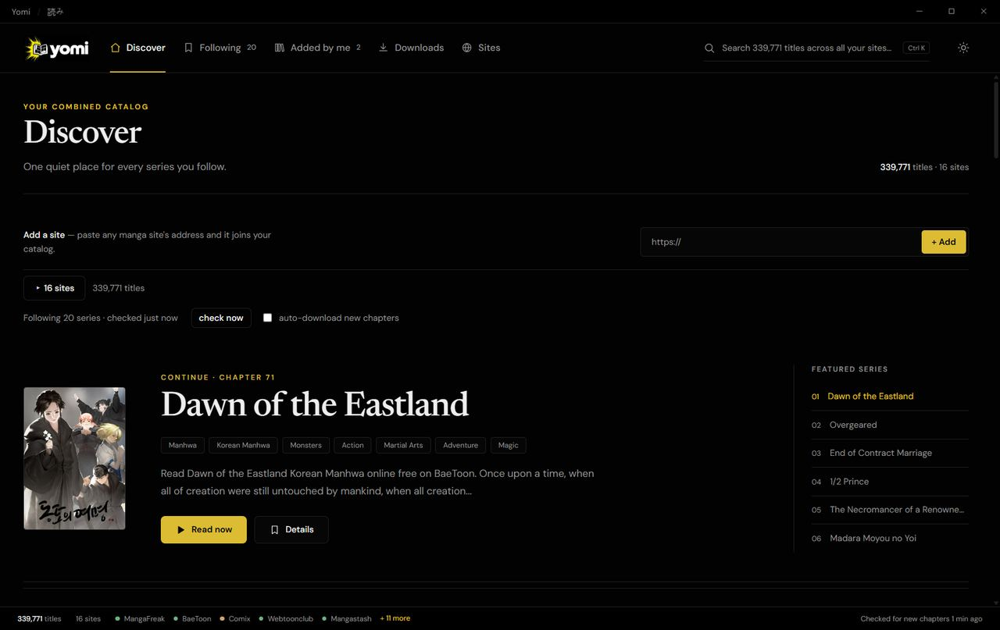

مجاني · ويندوز 10 و11
كل المانجا في مكان واحد هادئ
يجمع Yomi مواقع المانجا والمانهوا والمانها في قارئ واحد نظيف وبلا إعلانات. ابحث فيها كلها مرة واحدة، وتابع سلاسلك، واقرأ بلا فوضى.
مثبّت واحد لكل أجهزة ويندوز، ويحدّث نفسه بنفسه.

كل ما تقرؤه في تطبيق واحد
لا يستضيف Yomi أي شيء. هو يقرأ المواقع التي تختارها ويعرضها في قارئه الهادئ.
كل مواقعك معًا
الصق رابط موقع وتنضم كل عناوينه إلى فهرس واحد. ابحث في مئات الآلاف من العناوين دفعة واحدة.
بلا إعلانات ولا فوضى
الصفحات فقط. اقرأ من الأعلى للأسفل، أو صفحة بصفحة، أو من اليمين لليسار للمانجا.
قراءة سلسة
تابع التمرير مباشرة إلى الفصل التالي، مع سطوع ليلي وعدسة مكبّرة عند الحاجة.
فصول جديدة تصلك
تابِع سلسلة ويخبرك Yomi عند صدور فصل جديد، مع غلافه.
اقرأ بلا إنترنت
نزّل الفصول لتقرأها بلا اتصال، أو احفظها كملفات CBZ.
لا يوقفك موقع معطّل
إذا تعطّل موقع، يفتح Yomi الفصل من مواقعك الأخرى. وفحص يومي يخبرك أي موقع تعطّل ولماذا.
MyAnimeList وAniList
شاهد التقييمات وقوائم الأفضل، وأبقِ تقدّمك في AniList محدّثًا وأنت تقرأ.
بالعربية والإنجليزية
التطبيق كله بالعربية من اليمين لليسار أو بالإنجليزية، والمواقع العربية والإنجليزية جنبًا إلى جنب.
لك وعلى جهازك
بلا حساب. مكتبتك وتقدّمك يبقيان على جهازك.
صفحة لكل سلسلة
كل المواقع التي فيها السلسلة في مكان واحد، والأسرع يُختار لك، ومكانك محفوظ.

ابدأ في دقيقة
- نزّل Yomi-Setup وشغّله.
- في الاستكشاف، اختر موقعًا من مواقع مشهورة، أو الصق رابط أي موقع مانجا في إضافة موقع.
- ابحث بـ Ctrl + K، وافتح سلسلة واضغط اقرأ.
- اضغط تابِع لتعرف بالفصول الجديدة.
- لتظهر الواجهة بالعربية: Settings ثم Language · اللغة ثم العربية.
إذا ظهرت رسالة "Windows protected your PC" اضغط More info ثم Run anyway. تظهر هذه الرسالة لتطبيقات المطوّرين الصغار الذين لا يدفعون مقابل شهادة توقيع.
أسئلة
هل Yomi مجاني؟
نعم. بلا إعلانات ولا اشتراك، والكود مفتوح على GitHub.
هل يستضيف Yomi المانجا؟
لا. Yomi قارئ: يفتح المواقع التي تضيفها بنفسك ويعرض صفحاتها بلا الإعلانات حولها.
هل بياناتي خاصة؟
مكتبتك وتقدّمك وتنزيلاتك تبقى على جهازك. لا حساب ولا تتبّع. التقييمات والاقتراحات تسأل MyAnimeList وAniList عن عنوان السلسلة التي تفتحها، ويمكنك إيقاف ذلك من الإعدادات.
ما المواقع التي تعمل؟
مواقع مانجا عربية وإنجليزية كثيرة. يعرض Yomi المواقع المجرّبة في «مواقع مشهورة»، ويمكنك تجربة أي موقع آخر بلصق رابطه.